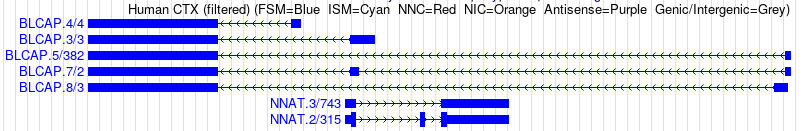
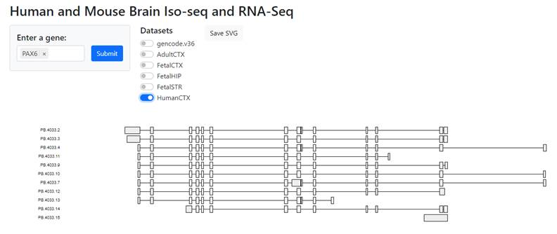

Full-length transcript sequencing of human and mouse identifies widespread isoform diversity and alternative splicing in the cortex
The full text on Cell Reports is here.
A Genome Browser Track Hub can be found here. Tracks available on human (hg38) and mouse (mm10) builds.

An isoform viewer resource (beta) can be found here

Hub Notes:
The online resource is provided as a UCSC Genome Browser Track Hub displaying both SQANTI2 filtered and SQANTI2 unfiltered isoform structure data. Additional annotation through the use of coloring to indicate structural categories as described below (original source https://github.com/Magdoll/SQANTI2 )
If a transcript is associated with a known gene, the associated gene name will be show in place of the original PB.1234.4 original annotation from Iso-Seq. The number of reads suupporting that isoform are also shown. For example: NNAT.3/6 indicates an isoform associated with the gene NNAT. It is isoform number 3 and shows 6 independent full length reads supporting this isoform structure.
Related to number of reads supporting each transcript isoform, we have also created alternate 'Read' tracks to indicate levels of expression through shading, where a light shaded isoform indicates a minimal support of just 2 reads, with intensity increasing as more and more reads support each isoform.
RNA-Seq data when available is also shown as RPKM coverage based on a 10bp window.